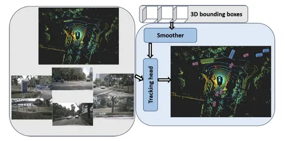

Сегодня разберём работу о модульном фреймворке для трёхмерного трекинга множества объектов. Подход основан на совместном использовании трёх типов информации:
BEV-фичи вычисляют с помощью стандартного пайплайна BEVFusion.
Detection queries получают из отдельного блока smoother. Это энкодер-декодерная архитектура, обученная на вспомогательной задаче временного уточнения исходных 3D-детекций. Энкодер собирает для каждой детекции контекст по нескольким кадрам. Декодер уточняет положение, размеры и класс объекта.
При этом в основной трекер передаются не сами итоговые детекции, а извлечённые из промежуточного слоя object-query-представления, сформированные в процессе решения задачи уточнения. Они и становятся detection queries текущего кадра.
Track queries — промежуточные query-представления, сформированные основным трекинговым декодером на предыдущем кадре. Для подтверждённых активных треков модель сохраняет связанные с ними скрытые представления и передаёт их на следующий кадр. Таким образом, между кадрами переносятся не сами предсказанные боксы, а признаки, аккумулирующие информацию о положении, классе и идентичности каждого отслеживаемого объекта.
После независимого кодирования все три типа информации объединяются с помощью трансформера с multi-head attention. Track queries предыдущего кадра выступают в роли queries, detection queries текущего кадра — keys, а BEV-фичи — values. Благодаря этому модель сопоставляет активные треки с новыми детекциями и извлекает из BEV-представления необходимый пространственный и семантический контекст.
Декодер предсказывает обновлённые координаты, размеры, классы, идентификаторы и значения уверенности объектов. Промежуточные query-представления подтверждённых треков рекуррентно передаются на следующий кадр, поэтому непрерывность трекинга поддерживается без отдельной модели движения или фильтра.
Система заточена на модульность: можно менять способ получения BEV‑фич, а также подключать разные детекторы, обучая их независимо или совместно.
Авторы показывают, что FutrTrack превосходит предыдущие трансформерные методы по основным метрикам 3D-трекинга. При этом он всё ещё уступает SOTA-трекерам, основанным на гибридных пайплайнах, в которых обучаемые нейросетевые компоненты сочетаются с явно заданными моделями движения или ассоциации объектов.
Таким образом, полностью data-driven подход на основе трансформеров пока не демонстрирует устойчивого преимущества над системами, использующими геометрические и вероятностные ограничения. Особенно важными такие ограничения остаются в ситуациях с неполными или неоднозначными наблюдениями. Например, при длительных перекрытиях, пропусках детекций или в плотном трафике.
Разбор подготовил
404 driver not found
